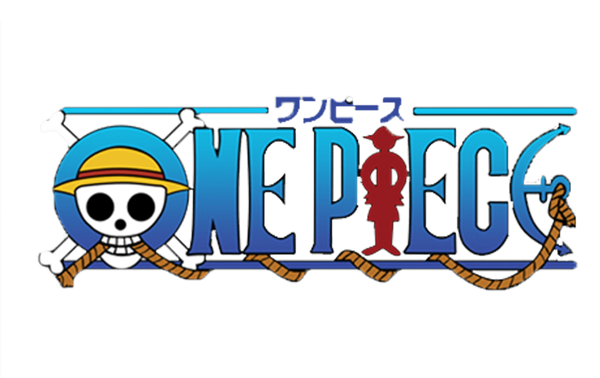

개요
원피스는 해적을 동경하던 소년 몽키 D. 루피가 주인공으로,
그 루피가 자라나 해적왕을 목표로
대비보 원피스를 찾는 과정을 그린 모험만화이다.
프롤로그

옛날에 이 세상의 전부를 손에 넣은 전설의 해적왕 골 D. 로저.
그가 남긴 부, 명성, 권력의 모든 것인 대비보 "원피스"를 찾기 위해
수많은 사람이 해적이 되어 나서고, 대해적 시대의 막이 오르게 된다.
그리고 해적을 동경하는 소년 몽키 D. 루피는
어느 날 고무고무 열매를 먹어 고무 인간이 되었고,
후에 루피는 동료를 모아 해적왕이 되기 위해서 바다로 나아간다.
줄거리
해적 몽키 D. 루피는, 해적왕이 되기로 각오하고 바다를 탐험하며 동료를 모은다. 루피가 결성한 밀짚모자 해적단은 해적하면 연상되는 약탈과 살인 대신 동료를 만들고 그 동료들과 나라를 도와주거나 탐험을 하는 등의 자유분방하고 동료를 무엇보다 위하는 그런 해적단이다. 루피와 그의 동료들은 각자의 꿈과 목적을 가지고 있으며 그것을 이루기 위해 바다를 여행하고 있다.
원피스의 전개는 해적만화지만 해상보다는 육지에서 주로 이루어진다. 주로 각 섬에서 사건에 휘말려버리고, 그 섬의 적을 쓰러뜨린 후 다음의 섬으로 나아간다. 적의 경우에는 해적이 많으나, 세계정부의 해군, 정부의 첩보 기관, 한 나라의 원수 등의 공권력과 싸우는 경우도 있다. 바다에서는 주로 항해만이 묘사되고 있으며, 대포 포격 등 화기를 이용한 싸움은 별로 그려지지 않는 대신 등장인물 중에는 초인적인 전투 능력을 가진 이들이 많기 때문에, 주로 초인간의 싸움이 자주 등장한다.